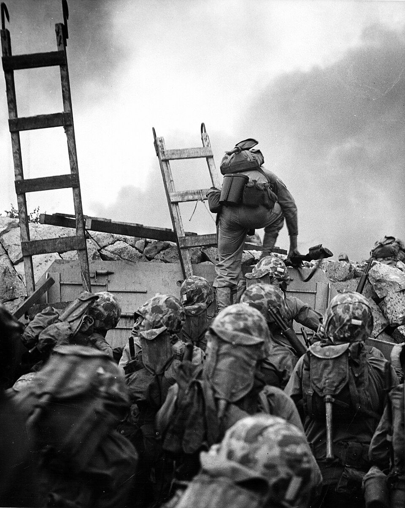
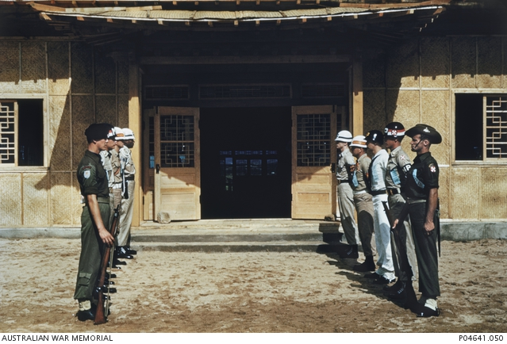
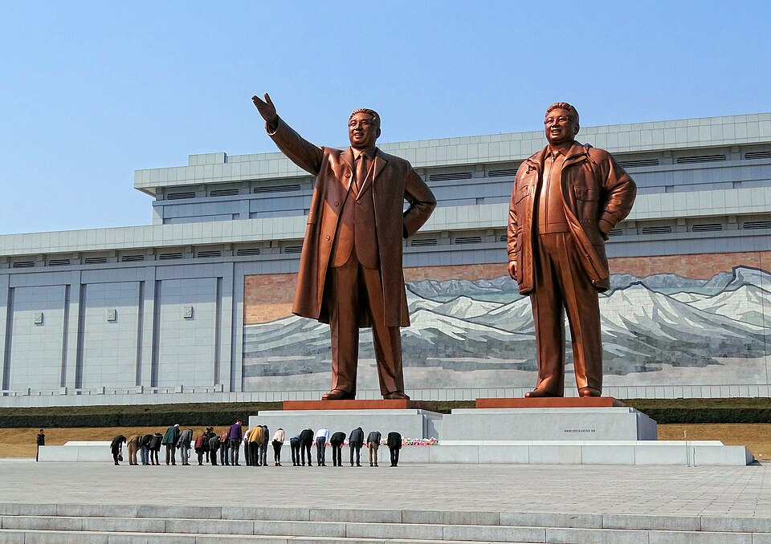
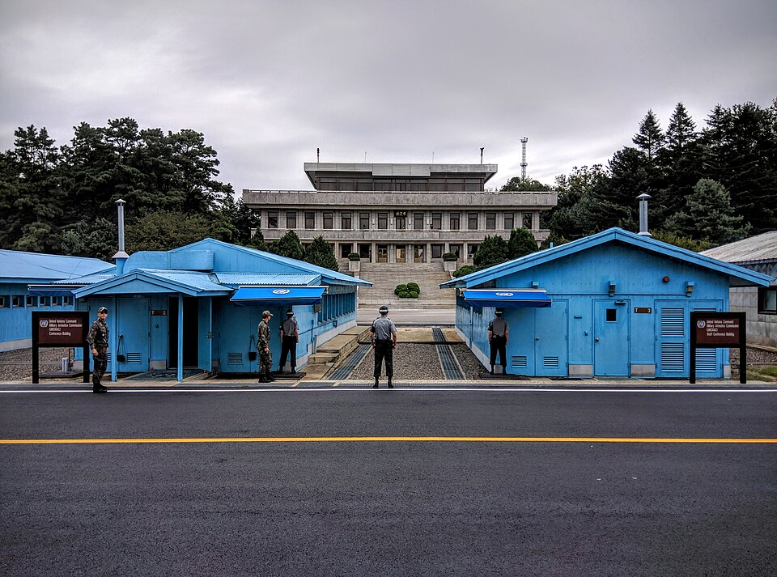
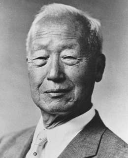
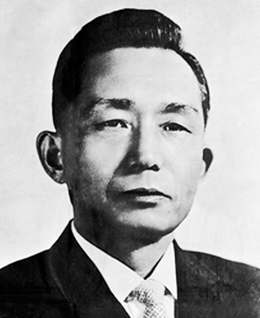
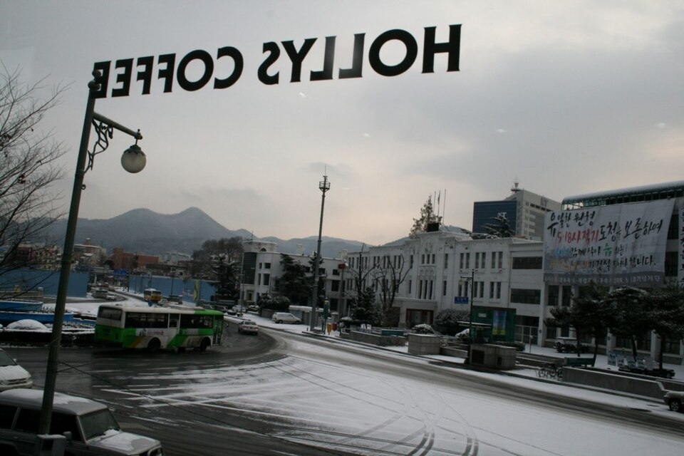
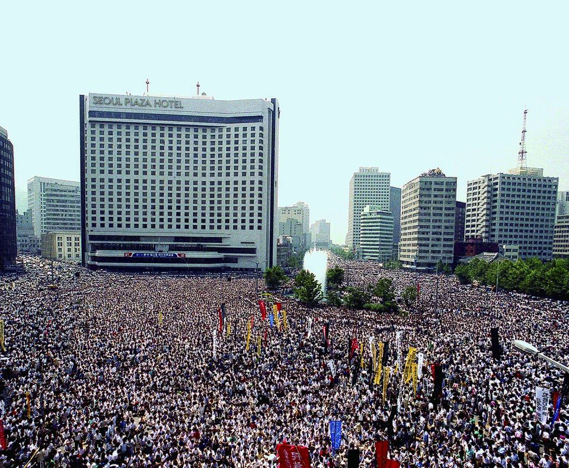
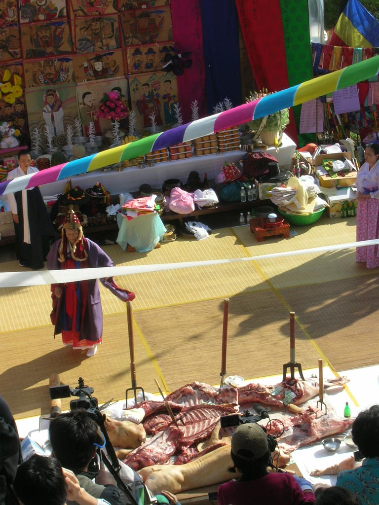

Unit 16 · Study guide · Korea
Korea Divided 남북한
North and South Korea, 1945 to the present
ContentsOverview
The unit in one paragraph
p. 490
Liberation from Japanese rule in 1945 divided the Korean peninsula. In 1948 two separate states formed: the North under the Soviet Union, the South under the United States. The bloody Korean War (1950–1953) fixed the division at the demilitarized zone (DMZ). The two states then raced for military and economic superiority, and each took a distinctive path. The North built a cult around the founder of a new dynasty, Kim Il Sung. The South moved from dictatorship to democracy, with a pluralistic society and a popular culture that drew fans across East Asia. Despite more contact since then, the two still follow different paths.
- Was the division of Korea in 1945 simply foreign interference, or did it reflect internal differences?
- Was the Korean War an act of aggression by the North or the continuation of civil conflict?
- What is responsible for the two Koreas' divergent political, economic, and cultural systems?
- What are the chances for Korean reunification?
Soviet-backed. A command economy, a million-man army, and the Kim family's personality cult and juche ideology. Three generations of Kims have ruled.
U.S.-backed. Dictators until 1987 drove state-led export growth; since 1987 a democracy with a consumer society and the Korean Wave.
Timeline at a glance
Liberation and division, 1945–1948
pp. 490–491
Why Korea, not Japan, was divided p. 490
Rather than divide Japan, as Germany had been divided, the Allies divided Korea. As soon as Stalin declared war on Japan, Russian forces invaded the peninsula. A week later, after Japan's surrender, the United States rushed troops to Korea and won Soviet agreement to split the peninsula at the 38th parallel.
Both occupiers were greeted by spontaneously organized People's Committees (PCs) spanning the political spectrum. Each side then picked a leader who matched its ideology:
| North (Soviet zone) | South (U.S. zone) | |
|---|---|---|
| People's Committees | Used as the basis for rebuilding civilian rule | Not used by General Hodge's U.S. military government; ended after the 1946 unrest |
| First leader | The socialist Jo Mansik (interim), replaced by Kim Il Sung in January 1946 | Rhee Syngman, brought back from the United States |
| Collaborators | Excluded from leadership | Businessmen and landlords who had prospered under Japan formed the Korean Democratic Party (KDP) |
| Communists | Several groups: domestic, Yan'an, Soviet-Korean, and Kim's Manchurian guerrillas | Park Heonyeong's Korean Communist Party (KCP) in Seoul; after 1946 its leaders fled north |
| Who moved where | Communists fled north; landlords, businessmen, and Christians from the North moved south | |
The North: Kim Il Sung takes charge p. 491
- 1Sept. 19, 1945. Kim and his supporters arrive from Siberia. The Soviets set up a northern branch bureau of the KCP and introduce Kim at a mass meeting in Pyeongyang, where he praises Stalin and backs Jo Mansik.
- 2Jan. 1946. With Soviet support Kim replaces Jo, who had opposed Stalin's agreement with the United States to set up a trusteeship for Korea.
- 31946 reforms. As chairman of the Provisional People's Committee, Kim carries out land reform, eliminating the landlord class and giving land to sharecroppers. He nationalizes industry (Japanese owners had left), sets an eight-hour day, bans child labor, creates a labor federation, declares equal rights for women, makes education universal through the eleventh grade, and founds Kim Il Sung University.
- 4Building power. His guerrilla allies from Manchuria become his chief aides; he creates the Korean People's Army.
The South: protest and civil conflict pp. 490–491
Millions of Koreans returned from Japan and Manchuria after liberation, many radicalized by the colonial years. In the South, local rivalries, distrust of the central administration, and resentment of outsiders fueled civil conflict:
- Late 1945–1946. Violent protests by workers and peasants; a railroad strike and mass demonstrations in Busan and Daegu (autumn 1946); farmers' riots against Hodge's grain policies in Jeolla and Gyeongsang. Two hundred police and a thousand civilians died. U.S. authorities blamed the communists, ended the PCs, and declared martial law.
- April 1948, Jeju Island. Islanders rebelled against a repressive right-wing governor and his youth gangs from the northwest, who had infiltrated the police. Two army regiments sent to fight the guerrillas rebelled in turn at Yeosu and murdered hundreds of police and landlords. U.S. forces helped suppress both.
p. 491. Guerrilla war, fed by tenant anger at high rents, spread throughout the South.
Two states, 1948 p. 491
The Cold War hardened the split. The United States backed Rhee's plan for peninsula-wide elections in 1948; the Soviets refused to allow them in the North, whose population was only half the South's. After a separate southern election, the Republic of Korea (ROK) was proclaimed on August 15, 1948, with a U.S.-style constitution; the National Assembly chose Rhee as president. On September 10, 1948, the North set up the Democratic People's Republic of Korea (DPRK), with Kim Il Sung as chairman of the National People's Assembly. Soviet troops left in December, and most U.S. forces in 1949.
See layer 1 of the map in Part 2 (Figure 2) for where these events took place.
The Korean War
pp. 491–494
Neither side expected the division to be permanent. From 1949 both Kim and Rhee ran cross-border raids, hoping to provoke all-out war. The United States kept Rhee from invading the North, lest he drag it into war with the Soviet Union. Stalin at first turned Kim down, and Mao, Kim's new ally (Kim had sent Korean troops to help the Chinese communists), called an invasion premature. p. 491
From invasion to stalemate pp. 492–494
- 1Reluctant backing, 1950. Stalin promised weapons, planes, and pilots only because he wanted to avoid a direct challenge to the United States; Mao sent perhaps 80,000 experienced Korean troops who had fought in the Chinese civil war.
- 2June 25, 1950. Kim invades with seven divisions and 258 Soviet tanks against four front-line ROK divisions with no tanks, and pushes south all the way to Busan.
- 3The U.S. response. Truman sees a plot by Stalin. He had already signed NSC 48, committing the United States to contain communism in Asia and "where feasible" reduce it. He calls the war a "police action" rather than declaring war, and uses the Soviet delegate's absence from the UN Security Council to win a UN force under General Douglas MacArthur.
- 4The Busan perimeter and Incheon. U.S. forces and the remnants of the ROK Army barely hold the Busan perimeter until MacArthur's surprise landing at Incheon, near Seoul, turns the tide.
- 5North to the Yalu. Kim withdraws across the 38th parallel; Truman lets MacArthur follow. Ignoring Chinese warnings passed through India, MacArthur heads for the Yalu River, promising his troops they will be "home by Christmas."
- 6China enters. Mao commits an army of Chinese "volunteers" that overruns U.S. positions. The Chinese recapture Seoul, then lose it again. In 1951 the front stabilizes along a line that becomes the DMZ.
- 7Armistice, 1953. After two more years of costly fighting, all parties except Rhee sign an armistice. There is still no peace treaty.
Truman's determination to roll back communism, in other words, is what brought China into the war. p. 492

The cost pp. 492, 494
Both sides and their big-power backers committed atrocities against soldiers, POWs, and civilians. North and South were so devastated that the industry built in the colonial period and expanded after 1945 lay in ruins. p. 494

North Korea: the economy
pp. 494–495
Kim Il Sung set the basic features of the North Korean system before the war, and they have barely changed: power maximized in the hands of the supreme leader, a militarist policy of arming the whole population, a revolutionary social policy, and periodic terrorist acts. The economy, a command economy, rode a roller coaster that plunged in 1991, when communism collapsed in the Soviet Union and Eastern Europe. p. 494
Farm collectivization p. 494
In the mid-1950s Kim planned to turn all farmers into wage workers on state farms. The plan was never fully carried out; it ended with smaller village collectives that merged small parcels into broad fields for tractors and chemical fertilizer. Productivity rose sharply at first. Only decades later did the drawbacks show: severe soil erosion, bureaucratic managers replacing age-old farming experience, and limits on moving or changing jobs. When Soviet support ended in 1991, fuel oil ran short and farm output plummeted.
Industry: early growth, then stagnation p. 494
Aid from the Soviet Union and China; investment in heavy and defense industry; consumer goods postponed. Rich mineral reserves gave faster industrial growth than in the South. In return for sacrifice, the state gave cheap housing and food and free education and medical care.
Aid declined. Five- and six-year plans could not fix production bottlenecks, weak technology, or excessive weapons spending. Kim answered with moral appeals and mass mobilization.
The Thousand-League Horse campaign of 1958 resembled China's Great Leap Forward but without its catastrophic famine: workers put in extra hours and students were pulled from class to work. By 1970 the North did well in the "second industrial revolution" (chemicals, steel, locomotives, engines) but missed the third, built on transistor electronics. Kim imported Western machinery and whole factories on credit from 1972, had nothing to export, and defaulted in 1975. Even so, per capita GNP probably matched the South's until at least 1983. p. 494
Collapse and famine pp. 494–495
Self-sufficiency brought growing hardship. In 1987 Kim had to abandon the 105-story Ryugyeong Hotel; he shifted toward light industry and consumer goods and opened economic and humanitarian talks with the South. The Soviet collapse left the North without a patron: Russia demanded cash for oil, and factories ran at a fraction of capacity. A 1991 free trade zone in the northeast drew no investors. Floods in 1995 and 1996 and drought in 1997 brought a famine that killed up to 2 million people. Pyeongyang residents and the army fared well; other civilians suffered malnutrition and disease. For the first time people could leave home without permission to forage, farm small private plots, and sell in farmers' markets.
Outside donors (charities, South Korea, China, the United States, and Japan) supplied perhaps a fifth of the North's food in the 1990s, and still do when politics allows. Illegal emigration into China's northeast grew, though China sends refugees back. p. 495
North Korea: state, society, and the Kim dynasty
pp. 495–497
A workers' state p. 495
The state banned collective bargaining, allowing only state-sponsored unions. In 1960 Kim borrowed Mao's "mass line" to make cadres consult workers and farmers on production plans. Short of industrial workers, he admitted farmers to the Korean Workers' Party (KWP) and taught them proletarian class consciousness through indoctrination and self-criticism. Unlike Mao, he never launched mass campaigns to purge cadres who had lost their revolutionary ideals.
A new hereditary hierarchy p. 495
Instead of equal treatment for all, Kim turned the old status structure upside down, reserving hereditary privilege for the new elite and hereditary stigma for outcasts. Click a layer.
Everyone was locked into state-run mass organizations. Facing labor shortages, Kim encouraged women to work, provided state child care, replaced the home kitchen with communal mess halls, gave women the right to divorce, and brought them into the military, though few women gained political responsibility. By 1962 he had executed all Catholic priests and Protestant ministers and sent Christians who had not fled south to reeducation camps. p. 495
The cult of the leader pp. 495–496
Kim's personality cult defines the regime. His 1972 constitution created the office of president, giving him control of every government agency; more shocking to committed communists, he subordinated the party to his command. He built giant statues of himself and took titles such as "supreme leader," "fatherly leader," "the Great Sun," and "genius of mankind." He also replaced communism with juche (self-reliance) as the leading ideology. A person with juche has absorbed correct thought, from which correct action springs in every situation, from making music and steel to getting up in the morning; juche makes North Korea proudly independent and "the center of the world."

The Kim dynasty p. 496
Kim Il Sung
"Fatherly leader." Ruled from 1948; in 1973 began grooming his son, following dynastic tradition. Died 1994.
Kim Jong Il
"Dear leader." Never took his father's title of president but raised the cult to new heights. Died at the end of 2011.
Kim Jong Un
Youngest son, made a four-star general and vice chairman of the Central Military Commission. Backed by family and military; trades on his resemblance to his grandfather, and rode a white horse firing the New Year's first shots.
The dynasty owes much to purges. After Khrushchev denounced Stalin's cult of personality in 1956, Kim purged members of the Russian and Yan'an factions who accused him of the same. He purged three generals after failed ventures against the South and the United States in 1968 and 1969. In the late 1960s hundreds of thousands of party members were punished, and the prison camps took in new political prisoners in the 1970s. Today the camps often hold recaptured economic refugees. Purges continued under his son and grandson. p. 496
Kang Cheol Hwan, survivor of a North Korean prison camp
Kang's family went from country to country, job to job, and privilege to a concentration camp.
- 1930s, Japan. His grandmother leaves Jeju Island for Japan at thirteen, joins the Japanese Communist Party at twenty, and marries a man from Jeju.
- After 1945, Kyoto. His grandfather opens a pachinko parlor, as many Korean residents of Japan did, and makes friends with yakuza (gangsters) to stay in the business.
- 1960s, Pyeongyang. The grandmother persuades the family to move to the North. They are welcomed as celebrities, greeted by Kim Il Sung, and given a first-class apartment; she sits in the Supreme People's Assembly. Kang is born soon after his parents marry in 1967.
- 1977, Yodeok camp. The grandfather vanishes, sent to a camp for treason. Soon nine-year-old Kang, his grandmother, father, and uncles are sent to Yodeok for the grandfather's crime; his mother is left behind. Two or three thousand prisoners; about a hundred die a year of hunger and disease. Adults work thirteen-hour days in the gold mine; minor offenses mean months in a sweatbox; executions are compulsory viewing.
- Surviving. Kang carries ore and hunts rats, frogs, snakes, and insects to supplement rations of cornmeal and cabbage soup.
- After ten years. Amnestied but barred from Pyeongyang, the family lives under surveillance in the countryside. Kang bribes his way into China and reaches South Korea.
Source: Chol-hwan Kang and Pierre Rigoulot, The Aquariums of Pyongyang (2001). The book's questions are in the Review kit.
North Korea and the world
pp. 497–498
Between two giant neighbors p. 497
Until 1991 Kim tried to stay on good terms with both communist giants: neutral in the Sino-Soviet split, with mutual defense treaties with each. Alarmed when Mao invited Nixon to Beijing in 1972, he let families separated by the war meet for the first time since 1953 and signed a joint pledge for peaceful reunification with the South. The thaw did not last. Flip each card.
Figure 9. Flip cards on North Korea's provocations, pp. 496–498, 502.
In 1989–1990 Northern officials signaled willingness to normalize relations with the United States and Japan, trade with the South, cut defense spending, and try market reforms. They objected to U.S. nuclear weapons in the South, the joint ROK–U.S. Team Spirit exercises, and the 37,000 U.S. troops stationed there. In 1991 Kim signed a denuclearization pact with the South; in return the United States withdrew all its nuclear weapons from Korea and cancelled Team Spirit. p. 497
The nuclear challenge pp. 497–498
- 11964–1986. Soviet-style gas-graphite reactors at Yongbyon generate power and also plutonium, usable for bombs.
- 21985. The Soviets get Kim to sign the Nonproliferation Treaty (NPT), which requires IAEA inspections. The IAEA never follows through.
- 3Early 1990s. Kim offers to swap to light-water reactors, which make less plutonium. When the United States ignores him and weighs punishment, he threatens to leave the NPT. Jimmy Carter, sent by Clinton, reaches a deal in Pyeongyang; Kim dies before talks continue.
- 41994. Kim Jong Il signs the Agreed Framework: South Korea and Japan pay for light-water reactors; the United States supplies 500,000 tons of heavy oil a year; the North stays in the NPT.
- 51997–2006. The deal is only partly kept: U.S. oil comes late and the 1997 crash leaves the South unable to pay for a reactor. The North fires a missile over Japan in 1998 (again in 2006, when it explodes 40 seconds after takeoff).
- 62002–2006. After 9/11, Bush names the North part of an "axis of evil." U.S. intelligence finds a secret uranium program (with Pakistani supplies). The North expels inspectors, leaves the NPT, and tests a plutonium bomb (2006).
- 72007 on. Under Chinese pressure it rejoins six-nation talks. Kim Jong Il offers to shut the program in return for respect for its sovereignty, help with reactors, and normal relations. Talks remain deadlocked.
Cautious opening under Kim Jong Il p. 495
After 1994 Kim Jong Il opened the economy a little: the Diamond Mountain tourist center for South Koreans, the Uiju free trade zone south of the Yalu, the Gaeseong industrial park (South Korean firms hiring cheap Northern labor for export goods), and rail lines and roads across the DMZ. He also counterfeited foreign currency and sold missile technology to U.S. enemies. In the 2000s the government swung between cracking down on markets (2005) and tolerating them; its 2009 currency revaluation wiped out hoarded cash. Trade with China brought electronics to urban residents who could afford them, and many of the most active traders were women.

South Korea: the dictators, 1948–1987
pp. 498–500
During the Cold War, dictators ruled the South. As in the North they suppressed civil liberties and pushed growth through heavy-handed state planning that bred inefficiency and corruption. They never built personality cults, but they killed, jailed, and tortured thousands of opponents. The only way to force change was from outside the system. pp. 498–499
Who ruled South Korea
Rhee Syngman (1948–1960) p. 499
Rhee built his dictatorship on the police, a new army, and a centralized bureaucracy that appointed district officials. His 1949 National Security Law threatened anyone who supported, assisted, or praised an "enemy state" (the North) with prison for treason; its terms were so vague that Rhee at once used it against political opponents. He railroaded bills through the National Assembly, used police to intimidate voters, gagged newspapers, and had critics jailed and tortured.
He finally overreached with blatant electoral fraud in 1960. On April 19, 1960, police fired on college students protesting his rigged reelection. The deaths inflamed the public; having lost the army's support, Rhee retired to Hawai'i.

Park Chung Hee (1961–1979) pp. 499–500
The students' protests inadvertently brought the South's longest-reigning dictator to power. A year after Rhee fell, General Park Chung Hee, a former Japanese army officer, took control. Under U.S. pressure he put on civilian clothes in 1963 and held elections. Relying on the bureaucracy, police, army, and Korean Central Intelligence Agency (KCIA), he won the presidency in 1963 and 1967, with majorities for his Democratic Republican Party.
- 1971. Park nearly loses the presidential election.
- 1972. A revised constitution lets him appoint one-third of the National Assembly (guaranteeing a two-thirds majority) and declare martial law at any time. Decree No. 9 bans any criticism of the president; all union activity is forbidden.
- 1973. The KCIA kidnaps his strongest rival, Kim Dae Jung, from a Tokyo hotel to dump him in Tokyo Bay; U.S. protest forces Park to bring Kim home under house arrest.
- 1979. Labor protests erupt in Busan and the Masan free export zone. As Park is about to turn the army on them, the head of the KCIA shoots him dead.

Chun Doo Hwan (1980–1987) and Gwangju pp. 499–500
A second military dictatorship followed. General Chun Doo Hwan declared martial law, closed the universities, banned politics, suspended the National Assembly, and arrested hundreds of students and politicians. When students in Gwangju, in Jeolla province, protested en masse on May 18, 1980, and citizens took over the city, elite paratroopers murdered people in the streets; it appears more than two thousand civilians died. Chun made Kim Dae Jung the scapegoat and had a kangaroo court sentence him to death; again U.S. pressure saved Kim's life.

Repression continued. Chun set a seven-year presidential term, banned hundreds of politicians, and won a sham election in February 1981. He dismissed professors, expelled 1,363 students and drafted a third of them (several were murdered on duty), sent others to brainwashing camps, purged hundreds of journalists, closed publishers, took over the Munhwa Broadcasting Corporation, and made every newspaper print his picture daily. p. 500
1987: the end of dictatorship p. 500
When Chun hinted he would break his pledge to retire at the end of his term, the largest demonstrations in Korean history erupted. Forced to retreat, he named General Roh Tae Woo, a commander in the Gwangju massacre, as his party's candidate, and authorized direct elections, a free press, and Kim Dae Jung's candidacy. Reagan pressed Chun to back down, but the main force for democracy was the students who had fought dictatorship for decades, joined at the end by much of the urban middle class.

South Korea: building a new economy
pp. 500–501
Land reform, adopted to compete with the North, created conservative small owners who voted for Rhee and later dictators. $11 billion in U.S. aid kept the economy afloat; Rhee handed dollars to favored businessmen for political contributions. Growth was so slow that U.S. officials proposed making the South a supplier of farm goods and raw materials for Japan, which Rhee opposed.
Military rulers ignored free-market principles and adopted a developmentalist strategy: the state, not the market, directed investment toward exports.
Park's toolkit p. 500
Money
Controlled the banks to direct foreign exchange and give low-interest loans to labor-intensive export industries such as textiles; devalued the currency to promote exports.
Firms
Let the most efficient companies grow into huge conglomerates; protected them with tariffs and nontariff barriers; banned selling export goods at home; capped foreign ownership at 49 percent.
People
Created a single national union to block labor activism; bought farmers' rice at high prices and sold it below cost to low-wage urban workers; built apartment blocks for squatters and the homeless.
Paying for growth p. 500
Just as Japan had prospered from the Korean War, South Korea prospered by sending steel and transport to Vietnam. p. 500
Workers push back p. 500
Workers protested that growth had not benefited them. In the late 1960s electronics, chemical, steel, and auto workers struck over low wages. In 1970 the nation was shocked when Jeon Taeil, a worker in Seoul's Peace Market garment sweatshops, set himself on fire to draw attention to workers' plight. In 1971 Park launched the New Village Movement, with training camps to mobilize farmers and workers for peaceful labor relations.
The big push pp. 500–501
- 11960s: light industry. Labor-intensive exports such as textiles, built on low wages.
- 21973: heavy and chemical industry. Over foreign advisers' objections, Park's Heavy and Chemical Industry program develops steel, ships, cars, petrochemicals, and electronics, partly to build weapons capacity. When oil prices jump in 1973–1974, he borrows abroad to keep factories running.
- 3End of the 1970s. The South exports machinery, steel, chemicals, freighters, and tankers.
- 41980s: electronics. Following Japan and the United States into the third industrial revolution, the industry the North had missed.
Growth paid the most handsome dividends to the conglomerates, but it also put money in workers' pockets. p. 501
Society, official arts, and allies under the dictators
pp. 501–502
An old order dissolves p. 501
The Korean War did as much as colonization to dissolve the old status system. It tore people from old ties of dependency and control, and from the 1960s industry drew a massive rural migration to Seoul and other cities. Former yangban from the southwest still claimed prestige but lacked economic and political power.
The military makes citizens of men p. 501
The military became the largest, most cohesive institution. Conscripts learned drill, discipline, patriotism, and anticommunism. Big corporations hired only men who had served, counted service as work experience for higher pay and faster promotion, and gave veterans extra points on hiring tests. Through universal conscription, men were incorporated into the nation as equal citizens.
Women at the margins p. 501
By treating the labor market as masculine, the dictators marginalized women. Educated women were held to secretarial or white-collar jobs, segregated from men, trained less, paid less, never promoted, and usually forced to quit on marriage. The textile industry hired hundreds of thousands of young women in the early 1970s, but only as cheap temporary labor. In the Factory New Village Movement (mid-1970s to early 1980s), factories ran classes in etiquette, flower arranging, and embroidery, because women workers were "mothers of future generations."
The state also funded women's organizations, such as the Korean National Wives' Association and the Korean Federation of Housewives' Clubs, to promote "rational" household management. p. 501
Official arts: heritage as patriotism p. 501
- 1959. Each province sponsors an annual folk festival of sanitized traditional arts; masked dance dramas drop their lines mocking the yangban.
- 1962. The Cultural Properties Protection Law designates tangible and intangible cultural assets, folk properties, and monuments.
- 1972. The Ministry of Culture and Information's five-year plan funds film, translation of Korean literature from Chinese into Hangul, archaeology, restoration of famous sites, and traditional handicrafts.
Modern traditional handicrafts
Traditional handicrafts are big business today. Stores near what was once the main U.S. army base in Seoul sell chests, tables, mother-of-pearl lacquerware, carved folding screens, tiger paintings, and silk, to Koreans furnishing homes like yangban mansions as well as to foreigners. In Madong village near Gyeongju, potter families make celadon-glazed ceramics in pinewood-fired climbing kilns. Artisans still craft long-stem bamboo pipes, though few people smoke them outside Joseon-era dramas; in old photographs, the older the smoker, the longer the pipe.
Handicrafts are the opposite of mass production: they reflect the anonymous craftsperson rather than the individual artist, and set regional styles against globalization's sameness. Through the Cultural Properties Protection Law (1962) and the Culture and Arts Promotion Law (1972), the government asserted that Korea has a distinctive heritage and a source of national pride.
Allies and anxieties pp. 501–502
After the war the South grew frustrated with depending on the United States for defense. In 1958 the United States placed more than two hundred nuclear weapons in the South, aimed at China and the Soviet Union as well as the North, yet it did not retaliate for the 1968 attempt on Park, the Pueblo, or the 1969 downing of the EC-121.
- 11969. The Nixon Doctrine shifts responsibility for self-defense to Asian nations.
- 2Feb. 1970. Nixon removes 20,000 of the 62,000 U.S. troops in Korea to cut costs. Alarmed, Park's agents bribe U.S. congressmen for more aid: the "Koreagate" scandal.
- 3July 4, 1972. Seeing Nixon's China opening as capitulation, Park negotiates directly with Kim Il Sung, who signs a joint agreement for peaceful reunification. It soon collapses.
Democracy in South Korea, 1987 to the present
pp. 502–504
Presidents and what they changed pp. 502–503
| President | Achievements | Troubles |
|---|---|---|
| Roh Tae Woo elected 1987 | The book gives him "great credit" for bringing democracy. Workers founded an independent union federation in defiance of the government-run one. Jailed fourteen of Chun's relatives for corruption; Chun retired in disgrace to a Buddhist monastery. | Won with only 35.9% because the opposition split into regional blocs; refused to let teachers unionize. |
| Kim Young Sam "1992–1997" | Ended military interference: purged officers who had served dictators; stripped military agencies of power to investigate politicians; first local elections in Korean history (1995); prosecuted Chun and Roh for treason, mutiny, and corruption (Chun jailed for life, Roh for seventeen years). | Popularity plummeted when cabinet members and his two sons went to jail for draft evasion and bribery. |
| Kim Dae Jung "1997–2002" | The first opposition victory in South Korean history (with the United Liberal Democratic Party). Set up a Human Rights Commission and a Ministry of Gender Equality. | The Asian financial crisis; backlash over his trip to Pyeongyang; his son and many officials prosecuted for bribes. |
| Lee Myung Bak Grand National Party | Elected when liberals seemed too conciliatory to the North and inept at economic reform. | By the end of his term, falling popularity and corruption scandals among his aides. |
After decades of dictatorship, the book concludes, democracy has become firmly entrenched: old regional power bases and patron–client ties could not compete with new political parties. p. 503
Opening up international relations p. 504
- Roh's northern diplomacy. Roh mended relations with the Soviet Union, Eastern Europe, and China.
- 1988 Olympics. Kim Il Sung tried to ruin the Seoul Olympics by having two agents blow up a South Korean plane flying from the Middle East. Instead of retaliating, Roh sent officials to Pyeongyang to persuade Kim to let the Hyundai conglomerate open a tourist park at Diamond Mountain, just north of the DMZ. He also punished activists under the National Security Law for unauthorized trips north.
- 1991. With Soviet and Chinese support the South joined the United Nations, forcing Kim to drop his opposition and join as well.
- The sunshine policy. Kim Dae Jung sought rapprochement, culminating in a 2000 summit with Kim Jong Il in Pyeongyang. He won the Nobel Peace Prize, but it was later revealed he had paid Kim Jong Il a $500 million bribe for the talks, and opposition grew as Kim Jong Il rattled sabers.
South Koreans support reconciliation, but having seen what reunification did to the West German economy, they are not eager to absorb their poverty-stricken neighbor. p. 504
Economic crisis and recovery
pp. 503, 506–507
- 1Globalization. Kim Young Sam's advisers adopt liberal free-market principles. Lower tariffs let cheap imports undersell home industry; firms lay off workers; conglomerates ride foreign capital, glut the market with cars, chips, and steel, and doctor their books to hide debt.
- 21996. National debt nearly doubles to $109 billion, two-thirds of it short-term.
- 31997. The Asian financial crisis spreads from Thailand. Foreign lenders call in short-term loans and drive six conglomerates into bankruptcy. A record IMF bailout of $55 billion prevents default.
- 4Retrenchment. The IMF raises interest rates to stabilize the currency; more firms fail; thousands are laid off, women first. Eleven state firms, including Pohang Iron and Steel, are sold off.
- 5Recovery, fall 1998. Defying the IMF, the government lowers rates. Conglomerates gobble up the loans; Kim Dae Jung lets foreign firms take majority stakes in failing businesses. Later: broadband for every home, and convicted conglomerate chairmen allowed back.
| Measure | Before | After | Before (grey) vs. after (red) |
|---|---|---|---|
| Interest rate, per year | 12% | 27% | |
| Unemployment | < 2% | 7.6% (Sept. 1998) | |
| Per capita income | $10,000 | $7,000 | |
| Real GDP growth | 5.0% | −6.7% (1998) | a swing of almost 12 points |
Bars are scaled to the larger value in each row. The GDP figures come from the Documents feature (p. 506).
Though the South still suffers technological gaps and jobs lost to low-wage countries like China, it sells electronics, appliances, and cars across the world. p. 503
South Korean women workers and the International Monetary Fund
To get IMF loans, the government had to accept structural adjustment programs: reduce demand, decontrol prices, reform trade, tighten credit, and privatize services. Women union activists explain what followed:
- Women were the margin that absorbed the shock. With no social safety net, the "IMF regime" fell hardest on women; by 2003 over 73 percent of women workers were contingent (Choi SangRim, president of the Korean Women's Trade Union).
- The big unions failed them. Both the FKTU and KCTU "totally failed to organize and protect women workers," so women formed their own union. Enterprise-level unionism meant the KCTU could not stop an affiliate from agreeing to abolish an all-women section (Lee HyeSoon). An activist felt "a deep sense of betrayal" (Park JinYoung).
- Small wins. Finding women janitors paid below the minimum wage, the women's groups lobbied the minimum wage committee and held its first-ever rally outside; the minimum wage rose.
Source: Seo Youngju, "Industrialization, Globalization and Women Workers in South Korea, 1960–2003," MA thesis, University of Massachusetts Lowell (2004), as excerpted on pp. 506–507. The book's questions are in the Review kit.
The Korean inflection of modernity
pp. 503–505
Marriage and family pp. 503–504
Arranged marriages declined; brokers were used only for introductions. College students held group "meetings" to pair off for dates and "love marriages," though couples still sought parental approval. Wives remained subordinate to husbands and mothers-in-law, but middle-class couples gained some distance in modern apartments their parents helped pay for. Couples pushed their children hard to enter the best colleges. Left alone by husbands who worked and drank until midnight, middle-class wives made money in real estate and stocks, and from the 1990s books and films portrayed married women seeking sexual liberation.
Work and equal rights p. 504
- Democracy let workers unionize. Young women preferred service jobs to factory work; educated young men chose white-collar jobs; remaining factories took on mature women in jobs once reserved for men.
- 1983. A telephone operator sues against forced retirement at forty-three, the first of many court cases.
- Late 1980s. The Equal Employment Law is criticized for not requiring equal pay or penalties.
- 1990s. Pressure from women's associations and unions wins new and amended equal opportunity laws; there is now a ministry for gender equality and the family.
The text points to "Documents: Selections from the Sexual Equality Employment Act," which is not in this edition; its Documents feature is the one in Part 10.
Two standards of living p. 504
| Measure | South | North | South (blue) vs. North (red) |
|---|---|---|---|
| Population | 48.7 million | 24.4 million | |
| Life expectancy at birth | 80 | 68 | |
| Infant mortality per 1,000 births | 5.0 | 33.0 | |
| Electric power, kWh per person | 8,853 | 810 | |
| Internet users per 1,000 | 809 | 0 | |
| Paved roads, % of total | 79 | 6.4 |
The book's source: World Bank. Bars are scaled to the larger value in each row; for infant mortality, the longer bar is worse.
Rising income brought a consumer culture and conspicuous consumption of clothes, appliances, pianos, and luxury apartments. Nearly every household has Internet access, and young urbanites use cellphones for everything from biorhythms to train tickets and groceries. pp. 505, 507–508
Literature p. 505
Poetry and fiction in ordinary language came into their own, often about the war, social justice, and dictatorship.
| Seonu Hwi | Flowers of Fire: the Ko family from the March First demonstrations of 1919 through the Korean War |
| Chae Mansik | Peace Under Heaven: an evil landlord |
| Kim Chiha | The "Five Bandits" poem, condemning bureaucrats and businessmen |
| Hwang Sunwon | The lives of the poor in the 1970s |
| Hwang Seokyeong | The Shadow of Arms (1985): personal problems and Korean soldiers in Vietnam |
| Pak Gyeongni | The Land (1980): a vast saga of hundreds of characters; adapted for television, film, and opera |
| Kang Seokgyeong, Kim Jiwon, O Jeonghui | Women short-story writers: contemplative stories of anomie under industrialization |
Religion and the Korean Wave p. 505
Another response to urban anonymity has been new religions. Christianity, Buddhism, and Cheondogyo still draw adherents, but many Koreans prefer activist ministries: medical missionaries serve war zones from Ethiopia to Afghanistan, and Reverend Sun Myung Moon of the Unification Church holds mass weddings.
In the late 1990s the "Korean Wave" hit China, Taiwan, Southeast Asia, and Japan, and later reached the United States, Europe, and South America. Led by TV dramas, music, and film, it popularized Korean fashion, food, cosmetics, and electronics. Korean films win festival awards and outsell Hollywood at home: Yun Jongbin's The Unforgiven (2005) critiques conscription and military subculture; there are romantic comedies (Please Teach Me English, 2003) and animation (Empress Chung, 2005). On DVD, they have even infiltrated North Korea.
Popular religion across East Asia
p. 509
South Korea has an estimated three hundred thousand shamans. They placate the gods, comfort the spirits of the dead, walk barefoot on knife blades to intimidate evil spirits, and help politicians decide whether moving an ancestor's tomb will win elections. They run fortunetelling websites; young shamans keep blogs.
China, Japan, and Korea share a wide range of popular religious ideas and practices. Four common threads:

| Thread | China | Korea | Japan |
|---|---|---|---|
| Mediators with the invisible world | Shang diviners cracked bones to reach ancestors and gods; shamans leave their bodies; in Taiwan today they carry bribes to the king of the underworld for the newly dead | Goguryeo shamans exorcised vengeful spirits and read turtle-shell cracks; Silla crowns resemble Siberian shamans' headdresses | The earliest ruler in Chinese records (3rd c.) relayed the gods' messages; founders of new religions and mediums continue this; mountain priests roam the invisible world |
| Local deities | A spirit world organized like the visible one: a king of hell, bureaucrats, police; city gods who can be dismissed; the goddess of mercy; Guandi, god of war and business | Gods in mountains, waters, trees, tigers, bears, and founding kings; rulers banned blood sacrifices to local gods (3rd and 12th c.) | Nature spirits; from the 16th c., men worshipped the god in themselves; 18th-c. suspicion that the newly rich controlled wealth-stealing fox spirits |
| Appeasing the dead | Families risk bankruptcy on lavish funerals; paper furnishings, money, and food keep ancestors from becoming unhappy ghosts | Funerals remove the dead's dangerous influence; Buddhism spread in Goryeo Korea partly because its funerals removed fear of the dead. Travelers, infants, the unmarried, and mistreated women may return as vengeful spirits, so relatives must be respected | |
| This-worldly benefits | Goryeo shamans and Heian diviners summoned rain-giving dragons in droughts. Everywhere, people pray for safe childbirth, prosperity, health, and long life, to gods, Buddhas, or Daoist immortals: "better to ask them all" | ||
Skeptics since Xunzi in China's Warring States period have tied popular religion to ignorance. Under Mao it was a useless "feudal superstition," and most temples were converted to other uses. Since Mao's death it has revived, especially in Fujian and Guangdong, provinces with strong ties to Chinese outside the PRC. In North Korea, by contrast, religion was replaced by hero worship and patriotism (p. 508). p. 509
How has Korea changed in sixty years?
pp. 506–508
Division at the end of World War II created two countries with opposing political, economic, and social systems. Neither side expected it to last, and each expected its vision to prevail. The Korean War deepened the antagonism because it ended in an armistice, not a peace treaty. p. 506
- Backed by the Soviet Union, later and more grudgingly by China
- A million-man army plus 4.7 million reserves: one-fifth of adult men, 31.3% of GDP; the world's most militarized country
- Preached equality but founded a dynasty and fixed social divisions that block mobility
- Juche told people how to live as patriots "lest they end up in prison camps"
- Has fired on ships and territory, tested a bomb, threatened to turn Seoul into "a sea of fire"
- Dictatorships until 1987, but as a U.S. client state it had to bow to pressure on human rights
- State-run industries and conglomerates such as Hyundai; little attention to workers' lives or women's needs
- Promoted national heritage to build identity
- Democracy brought freedom from arbitrary arrest, a new urban society, and better foreign relations
- Citizens speak out against corruption; they even film lawbreakers for police rewards
Repressive regimes once ruled both the communist North and the bureaucratic capitalist South. The North has become a nationalistic hereditary monarchy; the South's military dictatorship has become a democracy. Both societies changed through social leveling and the partial liberation of women, in different ways. Religion gave way to hero worship in the North, while the pluralistic South follows varied practices. Both now stand taller on the world stage: the North through the threat of its nuclear program, the South through its economic dynamism and popular culture. p. 508
Why might the North stage its threats? Some analysts think it happens when the Kim family needs to overawe rivals within the ruling class; others point to paranoia about foreign enemies, as when the Bush administration declared the North part of the "axis of evil." p. 507
Unit 17 turns to Japan, which "prospered from the Korean War" (p. 500) and whose 1965 normalization of relations brought the South $800 million in grants and loans. Unit 19 returns to the peninsula's unresolved disputes in the twenty-first century.
Test yourself
Flashcards
Who's who
| Person | Why they matter |
|---|---|
| Kim Il Sung | Manchurian guerrilla backed by the Soviets; ruled the North from 1948 to his death in 1994; launched the 1950 invasion; built the personality cult, juche, and the Kim dynasty |
| Kim Jong Il | Kim Il Sung's son ("dear leader"); signed the 1994 Agreed Framework; opened Diamond Mountain, Uiju, and Gaeseong; tested a bomb (2006); died 2011 |
| Kim Jong Un | Kim Jong Il's youngest son and successor; trades on his likeness to his grandfather |
| Jo Mansik | Socialist the Soviets made interim leader in the North; replaced by Kim in January 1946 for opposing trusteeship |
| Park Heonyeong | Communist freed from Japanese jail; founded the KCP in Seoul; fled north after 1946 |
| General John Hodge† | Head of the U.S. military government in the South; did not use the People's Committees (first name from outside the textbook) |
| Rhee Syngman | First ROK president (1948); National Security Law; driven out by the April 19, 1960, protests; retired to Hawai'i |
| Park Chung Hee | Former Japanese army officer; took power 1961; export-led "developmentalist" growth; 1972 constitution; killed by his KCIA chief, 1979 |
| Chun Doo Hwan | General who seized power after Park; Gwangju massacre (1980); forced to allow direct elections (1987); later jailed for life |
| Roh Tae Woo | Gwangju commander who won the 1987 election and "deserves great credit" for democracy; opened ties with the Soviet bloc and China; jailed for seventeen years |
| Kim Dae Jung | Opposition leader kidnapped (1973) and sentenced to death (1980); president from 1997; sunshine policy, 2000 summit, Nobel Peace Prize |
| Kim Young Sam | Civilian president (1992–1997) who ended military interference, held the first local elections, and prosecuted Chun and Roh |
| Lee Myung Bak | Grand National Party president after the liberals; later beset by aides' scandals |
| Douglas MacArthur · Harry Truman | UN commander who landed at Incheon and drove to the Yalu · U.S. president who called it a "police action" |
| Jeon Taeil | Peace Market garment worker who set himself on fire in 1970 |
| Kang Cheol Hwan | Grandson of returnees from Japan; ten years in Yodeok camp; escaped via China to the South |
| Jimmy Carter | Former U.S. president who reached a nuclear deal with Kim Il Sung in Pyeongyang (1994) |
Key dates
| 1945 | Soviet invasion; division at the 38th parallel; Kim Il Sung arrives (Sept. 19) |
| 1946 | Kim replaces Jo Mansik (Jan.); northern land reform; autumn strikes and riots in the South |
| 1948 | Jeju rebellion (April) and Yeosu; ROK proclaimed (Aug. 15); DPRK (Sept. 10, per the book); Soviet troops leave (Dec.) |
| 1949 | National Security Law; most U.S. troops leave; cross-border raids |
| 1950 | NSC 48; invasion (June 25); Incheon (Sept. 15); China enters |
| 1951 · 1953 | Front stabilizes · armistice |
| 1956 · 1958 | Kim purges Russian and Yan'an factions · Thousand-League Horse campaign; U.S. nuclear weapons in the South |
| 1960 · 1961 | April 19 protests oust Rhee · Park takes control |
| 1962 | Cultural Properties Protection Law; all priests and ministers in the North executed by this year |
| 1965 | South normalizes relations with Japan ($800 million) |
| 1968 · 1969 | Attack on Park; USS Pueblo · EC-121 shot down; Nixon Doctrine |
| 1970 · 1971 | U.S. troop cut; Jeon Taeil · Park nearly loses; New Village Movement |
| 1972 | July 4 joint agreement; Park's new constitution; Kim Il Sung's new constitution makes him president |
| 1973 | Kim Dae Jung kidnapped; Heavy and Chemical Industry program; Kim Jong Il groomed |
| 1975 · 1977 | North defaults on Western debt · Kang Cheol Hwan's family sent to Yodeok |
| 1979 · 1980 | Busan and Masan protests; Park killed · Gwangju (May 18) |
| 1983 · 1985 | KAL 007 · North signs the NPT |
| 1987 | Mass demonstrations; Roh elected; Ryugyeong Hotel abandoned |
| 1988 | Seoul Olympics |
| 1991 | Soviet collapse; both Koreas join the UN; denuclearization pact; northeast free trade zone |
| 1994 | Kim Il Sung dies; Agreed Framework |
| 1995 · 1997 | First local elections in the South; famine begins in the North · Asian financial crisis; Kim Dae Jung elected |
| 1998 · 2000 | Missile over Japan; recovery begins · Pyeongyang summit |
| 2002 · 2006 · 2009 · 2011 | "Axis of evil" · plutonium bomb test · currency revaluation · Kim Jong Il dies |
Discussion questions
Open each for points the reading gives you to work with. The first four are the chapter's opening questions; the next is its closing question; the last six are the textbook's questions on its Biography and Documents features.
Was the division of Korea in 1945 simply foreign interference, or did it reflect internal differences?
- Foreign: the Allies chose to divide Korea, not Japan; the line and the first leaders were picked by the Soviets and Americans; the Cold War blocked joint elections (pp. 490–491).
- Internal: the book says the U.S.–Soviet split "soon reflected political and social differences between Koreans": collaborators versus radicals returning from Japan and Manchuria, landlords versus tenants, and local rivalries that fed civil conflict on Jeju and elsewhere (p. 491).
- People voted with their feet: communists went north; landlords, businessmen, and Christians went south.
Was the Korean War an act of aggression by the North or the continuation of civil conflict?
- Aggression: Kim planned the June 1950 invasion and lobbied Stalin and Mao for it (pp. 491–492).
- Civil conflict: both Kim and Rhee had raided across the border since 1949 hoping to provoke war; guerrilla war already raged in the South (p. 491).
- International war: Truman saw a Soviet plot, the UN sent a force, and China's "volunteers" entered when the UN pushed to the Yalu (p. 492).
What is responsible for the divergent political, economic, and cultural systems?
- Patrons: Soviet and Chinese aid and models in the North; U.S. aid, troops, and pressure on human rights in the South (pp. 494, 500, 507).
- Leaders: Kim's cult and dynasty; the South's dictators and then the democracy won by students and the middle class (pp. 495–496, 500).
- Economic choices: northern self-reliance and heavy industry versus southern export-led growth and conglomerates (pp. 494, 500).
- Local history: the book says each developed according to "their local histories" as well as their patrons (p. 490).
What are the chances for Korean reunification?
- Hopeful signs: the 1972 joint pledge, the 1991 denuclearization pact, family reunions, the sunshine policy and 2000 summit, Gaeseong and Diamond Mountain (pp. 497, 501, 504).
- Obstacles: no peace treaty; the nuclear standoff; repeated provocations; the $500 million bribe scandal (pp. 494, 498, 504).
- South Koreans' reluctance after seeing what reunification did to West Germany's economy (p. 504).
How has Korea changed in the last sixty years?
- The North went from communist regime to a "nationalistic hereditary monarchy"; the South from military dictatorship to democracy (p. 508).
- Both saw social leveling and partial liberation of women, in different ways; religion gave way to hero worship in the North, while the South is pluralistic.
- Both gained world standing: the North through its nuclear threat, the South through its economy and popular culture.
Biography: What in Kang Cheol Hwan's family's past might explain why he ended up a prisoner?
- His grandfather was sent to a camp for "treason"; the family was punished for his crime (p. 497).
- They had lived in Japan, run a pachinko parlor, and mixed with yakuza: a background the regime could treat as "tainted," like the mixed masses (p. 495).
Biography: How did Kang Cheol Hwan manage to survive?
- He avoided the worst punishments, worked as an ore porter, and hunted rats, frogs, snakes, and insects to supplement starvation rations (p. 497).
- After the amnesty he bribed his way into China and reached the South.
Biography: What does his story tell you about living conditions in North Korea?
- Collective, hereditary punishment; camps with forced labor, hunger, and public executions (p. 497).
- Even privilege was precarious: celebrated returnees could vanish overnight. Release still meant surveillance and exile from the capital.
Documents: What difficulties did women (and men) face after the 1997 crisis?
- Layoffs as industries vanished "in a brief instant"; women fired first; no safety net (pp. 503, 506).
- Shift to contingent work (73% of women by 2003), tiny workplaces, pressure to quit on marriage or pregnancy, wages below the minimum (pp. 506–507).
Documents: Why did women decide they needed their own trade union?
- The FKTU and KCTU "totally failed to organize and protect women workers" (p. 506).
- Enterprise-level unionism let affiliates sign away women's jobs; activists felt betrayed by male-dominated unions (p. 507).
Documents: What is particular to the Korean case, and what do Korean workers share with workers elsewhere?
- Shared: the informalization of women's work was a global trend (p. 506).
- Particular: elsewhere change was gradual or cushioned by safety nets; in Korea the coercive "IMF regime" forced the margins to absorb the whole shock at once.
Key terms
Click to expand
Terms are grouped by topic. Where a term depends on another, the entry says what it builds on, so read those first. Hover or tap any dotted term in the text for a quick definition, or open ✎ at the bottom right. † marks a term or fact from outside the textbook. Terms from earlier units are repeated briefly where you need them.
From earlier units (review)
- Yangban
- The hereditary elite of Joseon Korea. After the Korean War, former yangban still claimed prestige but lacked wealth and power; the dictators' folk festivals cut masked-dance lines mocking them. pp. 501–502; Unit 1
- Hangul
- The Korean alphabet, created in the fifteenth century. In the 1970s the state funded translations of Korean literature from Chinese into Hangul. p. 501; Unit 11
- Cheondogyo
- The "Religion of the Heavenly Way," the renamed Donghak faith; it still draws adherents in the South. p. 505; Unit 11
- Kim Il Sung
- Anti-Japanese guerrilla in Manchuria (Unit 11) who returned from Siberia in 1945, led the North from 1948, invaded the South in 1950, and ruled as "supreme leader" until his death in 1994. pp. 491, 494–498
- Rhee Syngman
- Exile leader (president of the Korean Provisional Government, Unit 11) whom the Americans brought back; first president of the ROK (1948) and dictator until the 1960 protests. pp. 490–491, 499
- Yan'an Communists
- Korean communists who had fought with Mao in the Chinese civil war (Unit 13); one of the North's factions, purged by Kim after 1956. pp. 491, 496
Liberation and division
- 38th parallel
- The line of latitude at which the United States and Soviet Union agreed in August 1945 to divide Korea into occupation zones. p. 490
- People's Committees (PCs)
- Local committees Koreans organized spontaneously in 1945, spanning the political spectrum. The Soviets built on them; the Americans did not, and ended them in 1946. pp. 490–491
- General Hodge
- The U.S. general who set up the military government in the South; his grain policies set off farmers' riots in 1946. pp. 490–491
- Jo Mansik
- Socialist the Soviets recruited as interim leader in the North; replaced by Kim Il Sung in January 1946 for opposing the trusteeship plan. pp. 490–491
- Trusteeship
- Stalin's agreement with the United States to place Korea under a period of international supervision before independence; opposing it cost Jo Mansik his post. p. 491
- Korean Democratic Party (KDP)
- Party formed in the South by businessmen and landlords who had prospered under Japanese rule. p. 491
- Korean Communist Party (KCP)
- Party formed in Seoul by Park Heonyeong, freed from Japanese jail; the Soviets set up its northern branch bureau for Kim Il Sung. p. 491
- Provisional People's Committee (PPC)
- The northern governing body Kim Il Sung chaired from 1946; it carried out land reform and nationalized industry. p. 491Builds on: People's Committees
- Jeju rebellion (1948)
- April 1948 uprising on Jeju Island against a right-wing governor and northwestern youth gangs in the police; suppressed with U.S. help; 45,000 died, 40,000 fled to Japan. p. 491
- Yeosu rebellion (1948)
- Revolt of two army regiments ordered to fight the Jeju guerrillas; they killed hundreds of police and landlords. p. 491Builds on: Jeju rebellion
- Republic of Korea (ROK)
- South Korea, proclaimed August 15, 1948, after a separate southern election, with a U.S.-style constitution and Rhee as president. p. 491
- Democratic People's Republic of Korea (DPRK)
- North Korea, established in September 1948 with Kim Il Sung as chairman of the National People's Assembly. p. 491
The Korean War
- Korean War
- The war begun by the North's invasion of June 25, 1950, fought by the two Koreas, a U.S.-led UN force, and China; it ended in a 1953 armistice with no peace treaty. pp. 491–494
- NSC 48
- U.S. policy document signed by Truman early in 1950, committing the United States to contain communism in Asia and "where feasible" reduce it. p. 492
- Douglas MacArthur
- U.S. general commanding the UN force; landed at Incheon and drove toward the Yalu, promising "home by Christmas." p. 492
- Busan perimeter
- The defensive line around Busan in the southeast, the limit of the North's 1950 advance, held by U.S. forces and the remnants of the ROK Army. p. 492; Map 28.1
- Incheon landing
- MacArthur's surprise amphibious attack at Incheon, near Seoul, on September 15, 1950, which turned the tide of the war. p. 492; Map 28.1Builds on: Busan perimeter
- Chinese "volunteers"
- The army Mao committed when UN forces neared the Yalu; it overran U.S. positions and retook Seoul (Unit 15). p. 492
- Demilitarized zone (DMZ)
- The buffer zone along the front where fighting stabilized in 1951, dividing North and South since the armistice. pp. 490, 492
- Armistice (1953)
- The cease-fire signed by all parties except Rhee Syngman in 1953. No peace treaty has followed. p. 494
North Korea
- Command economy
- An economy directed by state plans and orders rather than markets; the North's ran on five- and six-year plans. p. 494
- Thousand-League Horse campaign
- Kim's 1958 mass mobilization drive, similar to China's Great Leap Forward but without its famine: extra work hours, students taken from class. p. 494
- Ryugyeong Hotel
- A 105-story Pyeongyang hotel meant to be East Asia's tallest building; construction was abandoned in 1987, a sign of economic trouble. p. 494
- Mass line
- Mao's strategy, borrowed by Kim in 1960, of making party cadres consult workers and farmers in drawing up plans. p. 495
- Korean Workers' Party (KWP)
- The North's ruling communist party; Kim admitted farmers to it, then subordinated it to his own command. p. 495
- Personality cult
- The glorification of the leader through statues, murals, and titles such as "fatherly leader" and "the Great Sun"; it defines the North Korean regime. pp. 495–496
- Juche
- "Self-reliance," which displaced communism as the North's leading ideology: absorbing correct thought so that correct action follows in every situation; it makes North Korea independent and "the center of the world." p. 496Builds on: personality cult
- Kim Jong Il
- Kim Il Sung's son, groomed from 1973; ruled after 1994 as "dear leader," raising the cult to new heights; died at the end of 2011. pp. 495–496, 498
- Kim Jong Un
- Youngest son of Kim Jong Il, made a four-star general and vice chairman of the Central Military Commission before his father's death; third Kim to rule. p. 496Builds on: Kim Jong Il
- Yodeok camp
- The North Korean concentration camp with a gold mine where Kang Cheol Hwan's family was held, 1977–1987. p. 497
- Diamond Mountain
- Scenic area just north of the DMZ; Roh sought a Hyundai tourist park there, and Kim Jong Il opened a tourist center for South Koreans. pp. 495, 504
- Gaeseong industrial park
- Zone near the DMZ where South Korean companies built factories hiring cheap North Korean labor to make export goods. p. 495
North Korea and the world
- USS Pueblo
- U.S. intelligence-gathering ship captured by the North in January 1968; its 82 crew were held captive. pp. 496, 502
- Yongbyon
- Site north of Pyeongyang of the Soviet-style gas-graphite reactors built 1964–1986, which produced plutonium as a by-product. p. 497
- Nonproliferation Treaty (NPT)
- Treaty the North signed in 1985 under Soviet pressure, requiring IAEA inspections; it withdrew after 2002. pp. 497–498
- IAEA
- The UN International Atomic Energy Agency, which inspects facilities to prevent military use of nuclear material. p. 497Builds on: NPT
- Light-water reactors
- Reactors that produce less plutonium as waste; Kim offered to swap his gas-graphite reactors for them. p. 497
- Agreed Framework (1994)
- Deal signed by Kim Jong Il with the United States: South Korea and Japan would pay for light-water reactors and the United States would send 500,000 tons of heavy oil a year; only partly implemented. p. 498Builds on: light-water reactors
- "Axis of evil"
- President Bush's label after September 11, 2001, for "rogue states," including North Korea. pp. 498, 507
- Six-nation talks
- Nuclear negotiations among North Korea, China, Russia, the United States, South Korea, and Japan; still deadlocked. p. 498
South Korea under the dictators
- National Security Law (1949)
- Law threatening prison for treason for anyone who supported, assisted, or praised an "enemy state"; so vague that Rhee used it against opponents, and Roh still used it against activists. pp. 499, 504
- April 19, 1960
- Day police fired on students protesting Rhee's rigged reelection; the deaths turned the public and army against him. p. 499
- Park Chung Hee
- Former Japanese army officer who took control in 1961, ruled until assassinated in 1979, and drove export-led industrialization. pp. 499–500
- Korean Central Intelligence Agency (KCIA)
- Park's intelligence agency; it kidnapped Kim Dae Jung in 1973, and its head killed Park in 1979. p. 499
- Decree No. 9
- Park's decree banning any criticism of the president. p. 499
- Kim Dae Jung
- Park's strongest challenger, kidnapped in 1973 and sentenced to death after Gwangju; elected president in 1997, the first opposition victory; Nobel Peace Prize. pp. 499, 503–504
- Chun Doo Hwan
- General who led the second military dictatorship after Park's death; responsible for Gwangju; later jailed for life. pp. 499–500, 503
- Gwangju massacre (1980)
- Paratroopers' killing of civilians after students and citizens of Gwangju rose against martial law on May 18, 1980. p. 499Builds on: Chun Doo Hwan
- Roh Tae Woo
- Chun's chosen successor and a Gwangju commander; won the 1987 direct election and oversaw the transition to democracy; later jailed. pp. 500, 502–504
Economy, society, and allies
- Developmentalist strategy
- The military rulers' approach: the state controls banks, credit, and trade to steer investment into exports, ignoring free-market principles. p. 500
- Conglomerates (chaebol†)
- Huge business groups such as Hyundai that Park let the most efficient firms become; they gained most from growth. The Korean word chaebol is from outside the textbook. pp. 500–501, 507Builds on: developmentalist strategy
- Jeon Taeil
- A worker in Seoul's Peace Market garment sweatshops who set himself on fire in 1970 to draw attention to workers' plight. p. 500
- New Village Movement
- Park's 1971 movement, with training camps, to mobilize farmers and workers for peaceful worker–employer relations. p. 500
- Heavy and Chemical Industry program
- Park's 1973 "big push" into steel, ships, cars, petrochemicals, and electronics, to raise exports and weapons capacity. p. 500
- Factory New Village Movement
- State-sponsored factory program (mid-1970s to early 1980s) with classes teaching women workers etiquette and "womanly" skills. p. 501Builds on: New Village Movement
- Cultural Properties Protection Law (1962)
- Park's law designating tangible and intangible cultural assets, folk properties, and monuments, to assert a distinctive national heritage. pp. 501–502
- Nixon Doctrine (1969)
- U.S. policy shifting responsibility for self-defense to Asian nations; followed by a cut of 20,000 U.S. troops in Korea. p. 502
- "Koreagate"
- Scandal over Park's agents bribing U.S. congressmen to grant South Korea more funds. p. 502Builds on: Nixon Doctrine
Democracy and crisis
- Kim Young Sam
- Single-term president (the book's "1992–1997") who removed the military from politics, held the first local elections, and prosecuted Chun and Roh. pp. 502–503
- Lee Myung Bak
- Grand National Party president elected when liberals seemed too soft on the North and weak on the economy. p. 503
- Sunshine policy
- Kim Dae Jung's policy of rapprochement with the North, culminating in the 2000 Pyeongyang summit; damaged by a $500 million bribe. p. 504Builds on: Kim Dae Jung
- Asian financial crisis (1997)
- Crisis that spread from Thailand in 1997; foreign lenders called in short-term loans, bankrupting six South Korean conglomerates. p. 503
- International Monetary Fund (IMF)
- Provided a record $55 billion bailout, then imposed harsh retrenchment; South Koreans spoke of the "IMF regime." pp. 503, 506Builds on: Asian financial crisis
- Structural adjustment programs (SAPs)
- IMF loan conditions to reduce demand, decontrol prices, reform trade, tighten credit, and privatize government services. p. 506Builds on: IMF
- Korean Women's Trade Union (KWTU)
- Women's own union, formed because the FKTU and KCTU failed to protect women workers. pp. 506–507
- Equal Employment Law
- Late-1980s law criticized for not requiring equal pay or punishing employers; amended in the 1990s under pressure from women's groups. p. 504
Culture and religion
- "Five Bandits"
- Kim Chiha's famous poem condemning bureaucrats and businessmen. p. 505
- Unification Church
- Church founded by Reverend Sun Myung Moon, known for mass wedding ceremonies. p. 505
- Korean Wave
- The spread of South Korean TV dramas, music, and film, and with them fashion, food, cosmetics, and electronics, across Asia from the late 1990s and later worldwide. p. 505
- Shaman
- A mediator between the visible and invisible worlds who placates gods, comforts the dead, and drives off evil spirits; South Korea has about 300,000. p. 509
Sources and further reading
- Main text: Patricia Buckley Ebrey & Anne Walthall, Modern East Asia from 1600: A Cultural, Social, and Political History, 3rd ed. (Cengage, 2013), Ch. 28, "Korea (1945 to the Present)," pp. 490–508, including Map 28.1, "Korean War" (p. 493), Biography: "Kang Cheol Hwan, Survivor of a North Korean Prison Camp" (p. 497), Material Culture: "Modern Traditional Handicrafts" (p. 502), the table "A Comparison of Living Standards in North and South Korea, 2010" (p. 504), and Documents: "South Korean Women Workers and the International Monetary Fund" (pp. 506–507); and Making Comparisons: "Popular Religion" (p. 509).
- Outside facts (marked †): the hero heading 남북한 ("North and South Korea"); the name "Blue House raid"; General Hodge's first name, John; the Korean word chaebol; the term gut for a shaman's ritual; the date of the armistice (July 27, 1953); the start and end years of presidential terms after 1980 (Figure 11); and the details of the 1987 photograph (Figure 15), which come from its catalog record.
- Explore further: Wikipedia, "Korean War", "Jeju uprising", "Gwangju Uprising", "June Democratic Struggle", "Juche", and "Agreed Framework", for background (follow the textbook where they differ); the Wilson Center Digital Archive's translated Soviet, Chinese, and North Korean documents.
- Books cited in the chapter: Chol-hwan Kang and Pierre Rigoulot, The Aquariums of Pyongyang (2001); Seungsook Moon, Militarized Modernity and Gendered Citizenship in South Korea (2005); Seo Youngju, "Industrialization, Globalization and Women Workers in South Korea, 1960–2003" (MA thesis, 2004).
- Map data: coastlines from Natural Earth (public domain).
Fact-check notes
Every statement in this guide was checked against Ch. 28. A few of the book's figures differ from other standard references; the guide keeps the book's version in the text and notes the differences here.
- DPRK founding (p. 491). The book gives September 10, 1948; the DPRK is usually dated to September 9, 1948†.
- Jeju deaths (p. 491). The book's 45,000 is higher than most estimates. The South Korean government's 2003 report recorded about 14,000 named victims and estimated 25,000 to 30,000 deaths in all†.
- Gwangju deaths (p. 499). The book's "more than two thousand" is an unofficial estimate. The official tally is about 165 civilians killed and 76 missing†; bereaved families and activists put the toll higher, and the true number is disputed.
- KAL 007 (p. 498). The book says August 1983; the airliner was shot down on September 1, 1983 (local time)†.
- The 1987 airliner bombing (p. 504). The bombing the book ties to the 1988 Olympics happened in November 1987, before the Games† (Korean Air Flight 858).
- Roh's vote share (p. 502). The book gives 35.9 percent; the official result was about 36.6 percent†.
- Presidential dates (pp. 499, 502). The book dates Kim Young Sam (1992–1997) and Kim Dae Jung (1997–2002) by election year; they took office in February 1993 and February 1998†.
- Spelling. The book spells the communist leader both "Park Heonyeong" and "Pak Heonyeong" (p. 491), and the Korean War section is headed "(1949–1953)" (p. 491) while the chapter outline says 1945–1953. This guide uses "Park Heonyeong."
Image credits
- Marines scaling the seawall at Incheon, September 15, 1950, U.S. Marine Corps: public domain, Wikimedia Commons.
- Max Desfor (AP), "Flight of Refugees Across Wrecked Bridge in Korea," December 4, 1950: public domain, Wikimedia Commons.
- UN honor guard outside the armistice building at Panmunjom, July 27, 1953, Donald Bushby: public domain, Wikimedia Commons.
- Visitors bowing at the Mansudae Grand Monument, Pyeongyang, 2014, Bjørn Christian Tørrissen: CC BY-SA 3.0, Wikimedia Commons.
- The Joint Security Area at Panmunjom, 2016, Travis Wise: CC BY 2.0, Wikimedia Commons.
- Rhee Syngman, 1948: public domain, Wikimedia Commons.
- Park Chung Hee, about 1963: public domain, Wikimedia Commons.
- Former South Jeolla Provincial Office, Gwangju, 2009, Brandon Butler (kayakorea): CC BY-SA 3.0, Wikimedia Commons.
- Crowds at Seoul City Hall plaza for Lee Han-yeol's funeral, July 9, 1987, Seoul Metropolitan Government: KOGL Type 1 (attribution), Wikimedia Commons.
- A shaman performing a gut, 2007, ReSearcher (English Wikipedia): CC BY-SA 3.0, Wikimedia Commons.
- All other figures (map, charts, diagrams, timeline): drawn for this guide from the textbook's text.


_Joint_Security_Area_(JSA)_Looking_Into_North_Korea_(28819154694).jpg){kind=link}


Image titles and dates come from each image's catalog record, not from the textbook.